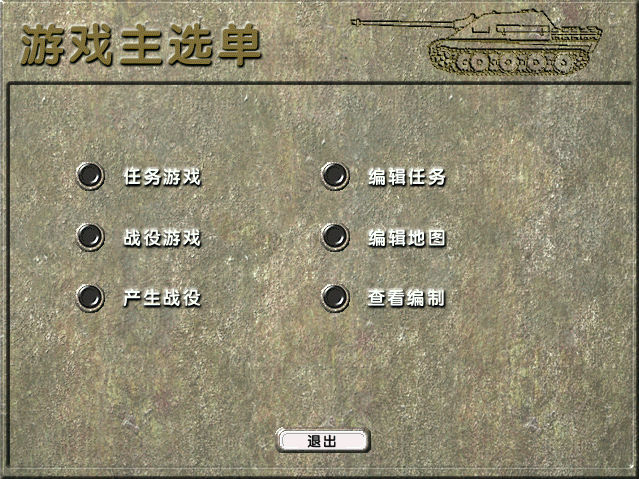
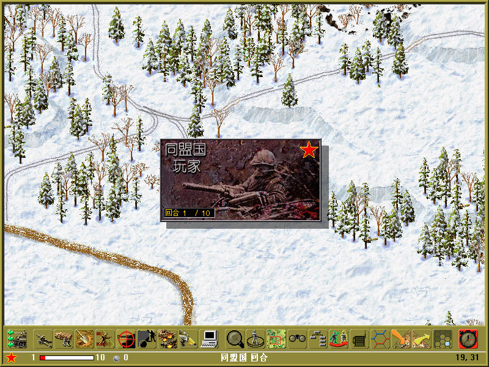

名稱：歐洲戰火之東線風雲2／歐洲戰火之東線風雲 (East Front II: The Russian Front／TalonSoft's East Front II，簡中／英文版) 簡介：TalonSoft 1999年出品的回合制戰術遊戲，2001年由晶合互動簡中化並代理發行 [待補]。

保護：光碟，破解碼： ef.exe E8 D2 10 00 00 84 C0 0F 84 CC 00 00 00 (簡中版) 90 90 90 90 90 -- -- 90 90 90 90 90 90 或 E8 E2 10 00 00 84 C0 0F 84 CC 00 00 00 (英文黃金版) 90 90 90 90 90 -- -- 90 90 90 90 90 90 備註：簡中版內含簡中文字檔名，必須在簡中系統上執行。 檔案：chs.rar = 簡中漢化檔